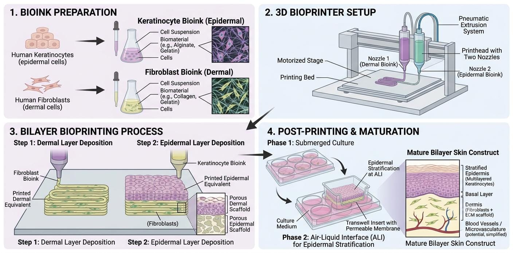

The ultimate frontier in reconstructive wound care is the automated, highly precise fabrication of human tissue through 3D bioprinting. While traditional bioengineered scaffolds rely on manual cell seeding—a process that often results in uneven cellular distribution, delayed vascularization, and structural inconsistency—3D bioprinting introduces an unprecedented level of control. It allows for the exact spatial deposition of living cells, biomaterials, and targeted growth factors in a single, continuous, computer-driven sequence.

As illustrated in Fig xi, modern clinical bioprinters utilize computer-aided design (CAD) models derived directly from high-resolution 3D topographical scans of the patient's wound bed. This digital blueprint guides the robotic extrusion heads, which deposit micro-droplets of "bio-ink" layer-by-layer to construct a personalized, anatomically perfect tissue graft. This technology promises to completely eliminate the long laboratory incubation times associated with traditional skin substitutes by manufacturing bespoke, full-thickness skin constructs on demand. By mapping the precise topography of a defect, surgeons can ensure that the printed graft perfectly matches the volume, depth, and contours of the traumatic injury, minimizing scarring and maximizing aesthetic recovery.
The success of 3D bioprinting hinges entirely on the complex formulation of the "bio-ink." Unlike traditional plastic or metal 3D printing filaments, bio-ink is a highly engineered hydrogel that must strike a delicate biological and mechanical balance. It must provide immediate structural support to hold a 3D shape, while simultaneously preserving the viability, proliferation capacity, and functionality of the fragile living cells suspended within it.
A standard clinical skin bio-ink consists of three primary components. The first is the structural hydrogel matrix, typically composed of naturally derived biopolymers such as alginate, gelatin methacryloyl (GelMA), collagen, or hyaluronic acid. These specialized hydrogels mimic the natural extracellular matrix (ECM). Crucially, they possess unique rheological properties, specifically shear-thinning behavior. This allows the hydrogel to flow smoothly as a liquid under the high pressure of the printing nozzle, but instantly cross-link (solidify) via UV light or chemical agents the moment it is deposited on the print bed, protecting cells from being crushed.
The second component is the sophisticated cellular payload. To replicate the complex stratification of native human skin, printers utilize multiple specialized ink cartridges. The primary cartridge deposits dermal fibroblasts embedded in a dense collagen matrix to form the robust, load-bearing bottom layer. A secondary cartridge deposits a dense concentration of epidermal keratinocytes on the surface to form the protective barrier. Advanced experimental models are pushing this even further by incorporating melanocytes for natural skin pigmentation and endothelial cells. By printing a pre-formed microvascular network directly into the dermal layer, researchers are actively solving the primary challenge of tissue engineering: deep graft necrosis due to a lack of immediate blood supply.
The final component of the bio-ink involves specific biochemical cues. Targeted growth factors, such as VEGF and TGF-β, are spatially distributed throughout the printed construct to guide immediate cellular differentiation and angiogenesis once the graft is implanted into the patient. By perfectly mimicking the native architectural stratification and biochemical gradients of human skin, bioprinted grafts exhibit significantly higher integration rates, faster epithelialization, and far lower contraction profiles than traditional manually cast dermal substitutes.
Bioprinters utilize several distinct mechanical technologies to deposit bio-ink, each with specific advantages regarding print speed, structural resolution, and cell viability. Because human skin requires both dense, structural dermal layers and delicate, highly cellular epidermal layers, researchers often utilize hybrid printers that combine multiple modalities. The most common standalone technologies in tissue engineering are summarized below.
| Bioprinting Modality | Mechanical Mechanism | Primary Advantage | Primary Limitation |
|---|---|---|---|
| Extrusion-Based | Pneumatic or mechanical pressure pushes viscous bio-ink through a micro-nozzle. | Can print dense, structural tissues with high cell concentrations. | Lower resolution; high shear stress can damage fragile cells during extrusion. |
| Inkjet (Droplet) | Thermal or acoustic forces eject liquid droplets of bio-ink onto a substrate. | Extremely high speed and low cost; excellent for thin epidermal layers. | Limited to low-viscosity (watery) inks, restricting overall structural strength. |
| Laser-Assisted | A focused laser pulse propels bio-ink from a ribbon onto the receiving wound bed. | Highest cellular viability (no shear stress) and ultra-high microscopic precision. | Highly expensive, complex calibration, and slower overall printing speeds. |
While laboratory-based bioprinting offers incredible precision, the most revolutionary horizon for this technology is in situ bioprinting. Instead of printing a skin graft in a sterile laboratory incubator and surgically transferring it to the patient hours or days later, in situ bioprinters are designed to be deployed directly over the surgical bed in the operating room.
Using robotic arms equipped with advanced laser topographical scanners, these devices map the exact dimensions, depth, and contours of a massive burn in real time. The printer then immediately deposits the necessary layers of dermal and epidermal bio-ink directly into the patient's wound bed. This direct-write approach allows the bio-ink to intimately conform to the irregular micro-architecture of the wound, bypassing the need for a separate scaffold matrix and paving the way for instantaneous, highly personalized tissue reconstruction in critical trauma scenarios.